백년화편
UX & Service Planning
app
web
2022
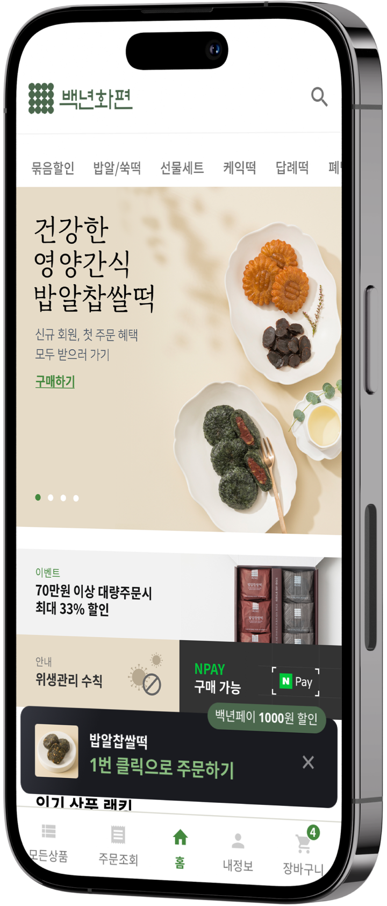
백년화편은 최상의 맛과 품질을 넘어 깊은 감동을 선사하고자 하는
마음을 담아
세심하고 까다로운 과정을 거쳐 완성된 쑥떡 전문점입니다.
본 프로젝트는 기존 웹, 모바일 인터페이스를 개선하여 백년화편의 브랜드 이미지를
정립하고 사용성을 높여 매출을 증대시키기 위해 기획되었습니다.
세심하고 까다로운 과정을 거쳐 완성된 쑥떡 전문점입니다.
본 프로젝트는 기존 웹, 모바일 인터페이스를 개선하여 백년화편의 브랜드 이미지를
정립하고 사용성을 높여 매출을 증대시키기 위해 기획되었습니다.
프로젝트 미션
eCommerce renewal
프로젝트 이슈
-
➀
가설 제시에 그칠 경우, 실제 유저의
니즈를 반영하지 못할 수 있음 -
➁
오히려 개편 이후 고객 불만을 초래해
매출 감소로 이어질 위험
문제 정의
검증없이 가설 제시만으로
구축된 사이트는
고객 불만이 높은 편
구축된 사이트는
고객 불만이 높은 편
문제 해결 방안 1
실질적인 개편을 위해
가설 검증 필요
가설 검증 필요
문제 해결 방안 2
UX 개선 가설을
검증할 수 있는 도구 사용
검증할 수 있는 도구 사용
가설검증 방법론
사용성 테스트를 통해
실제 고객을 대상으로 검증 진행
실제 고객을 대상으로 검증 진행

usability test
가설 검증
1명 또는 여러 사람에게 선물을 보낼 때 사용하기 용이하도록
주소 입력 및 주문서 작성 플로우 개선 필요
주소 입력 및 주문서 작성 플로우 개선 필요
usability test_ iNsight
사용성 테스트 분석
Finding
가족 및 지인들에게
선물하는 용도로 자주 사용
선물하는 용도로 자주 사용
주요 명절이나 행사 때 주변인들에게 프리미엄 선물을 돌리는 용도로
사용하며
여러 사람에게 동시에 발송해야 하는 경우가 잦은 편.
여러 사람에게 동시에 발송해야 하는 경우가 잦은 편.
Finding
중장년층이 정보를 인지하고
앱을 사용하기 어려움
앱을 사용하기 어려움
주요 고객층인 중장년층도 빠르고 손쉽게 원하는 정보에
접근할 수 있도록 주요 화면의 사용성 개선이 필요함.
접근할 수 있도록 주요 화면의 사용성 개선이 필요함.
Finding
복수배송 플로우 사용성 개선 ➀
1명 또는 여러 사람에게 선물을 보낼 때 사용하기 용이하도록
주소 입력 및 주문서 작성 플로우 개선 필요
주소 입력 및 주문서 작성 플로우 개선 필요
Finding
홈 화면 정보 시인성 개선 ➁
메인 페이지 섹션 구성을 개선하고 배너를 통한 브랜드 이미지 전달
상품, 주문조회 페이지 개선 ➂
구매행동에 영향을 미치는 주요 플로우 화면의 디자인 요소 개선
UXUI TASK
개선점 도출
사용자의 인지 프로세스를 중심으로 기존 서비스에서 개선이
필요한
지점을 탐색합니다. 인지 프로세스를 분석 기준으로 삼아, 플랫폼 내
페이지 별 개선점을 도출합니다.
지점을 탐색합니다. 인지 프로세스를 분석 기준으로 삼아, 플랫폼 내
페이지 별 개선점을 도출합니다.
➀
복수배송 플로우
단순화
단순화
➁
홈 화면 구성 및
디자인 개선
디자인 개선
➂
모든상품,
주문조회 페이지
사용성 개선
주문조회 페이지
사용성 개선
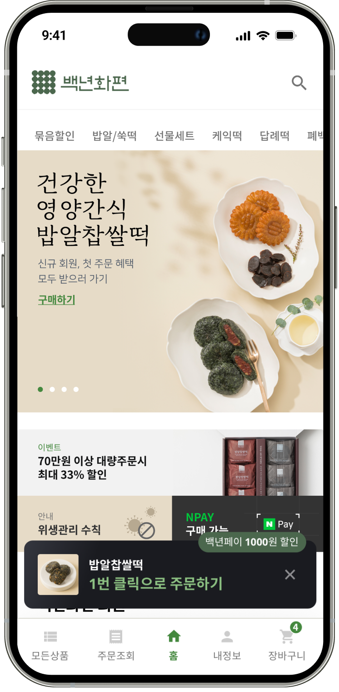
➀
복수배송 플로우 단순화
UT 결과에 따라, 복수배송 플로우를 단순화했습니다. 제품 상세 또는
장바구니 페이지에서
1명 또는 여러 명에게 주소나 휴대폰번호로 발송할 수 있도록 기획했습니다.
1명 또는 여러 명에게 주소나 휴대폰번호로 발송할 수 있도록 기획했습니다.
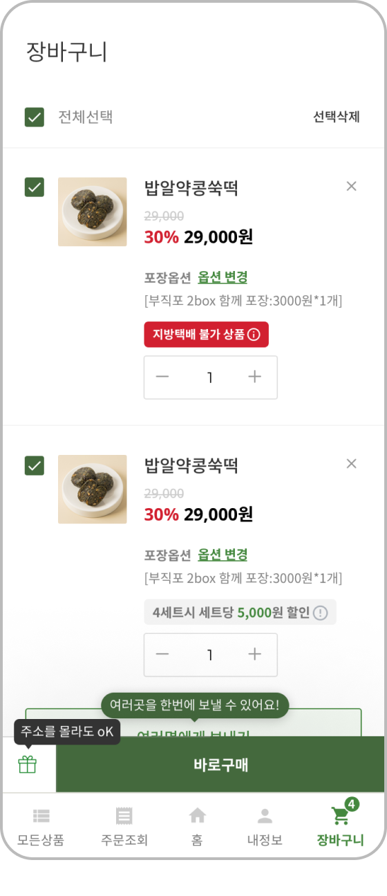
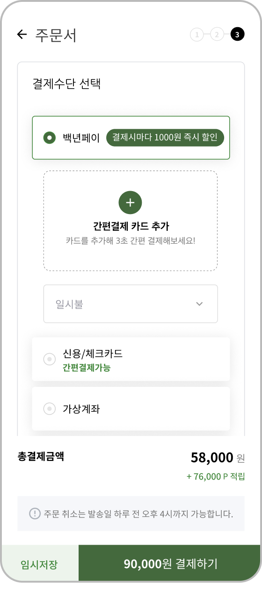
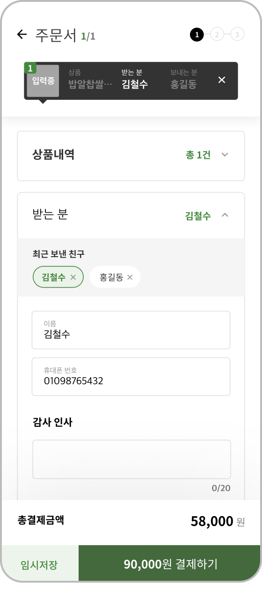
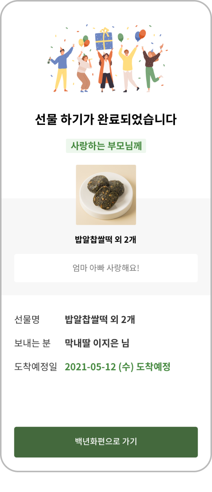
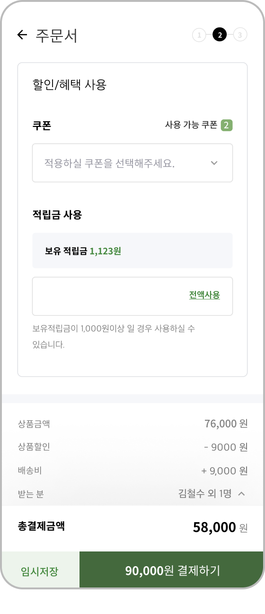
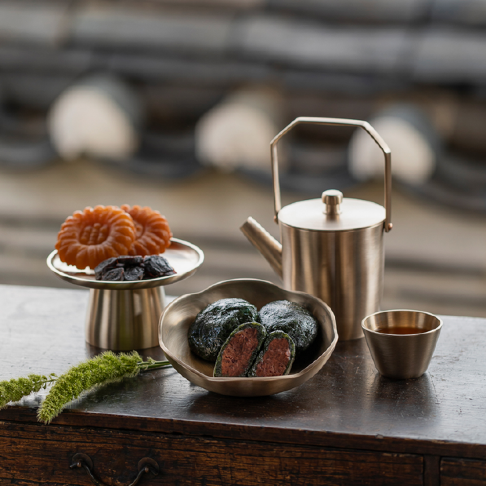
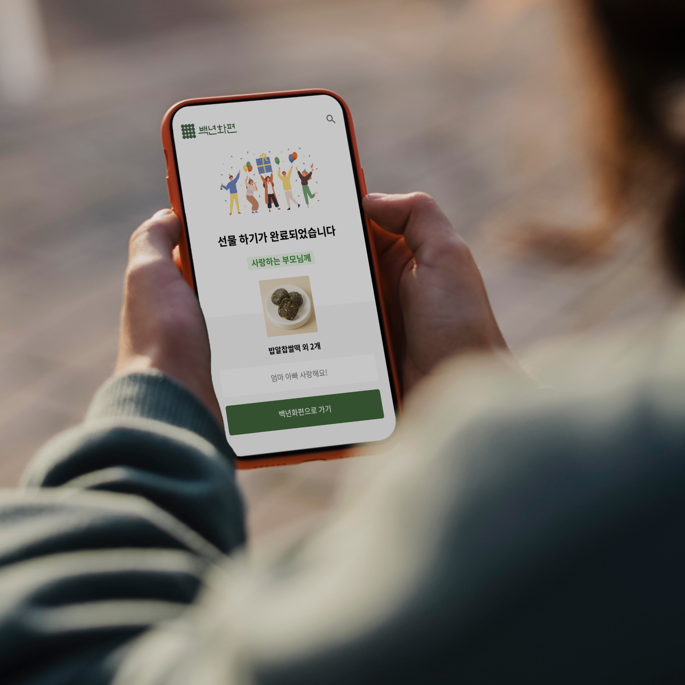
➁
홈 화면 구성 및 디자인 개선
브랜드, 이벤트, 인기제품, 추가정보들이 골고루 한눈에 들어오도록
개선하였습니다.
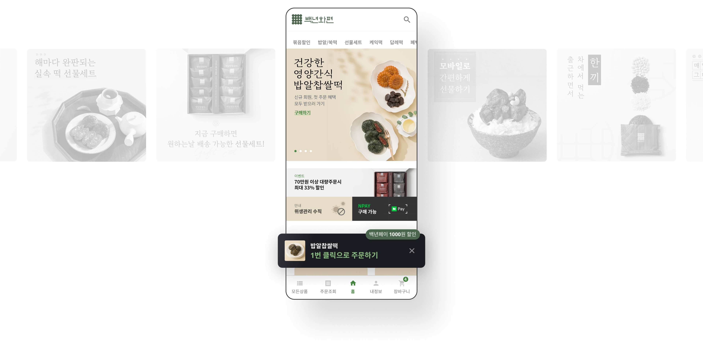
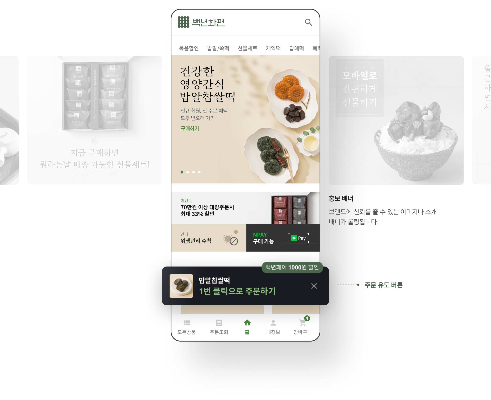
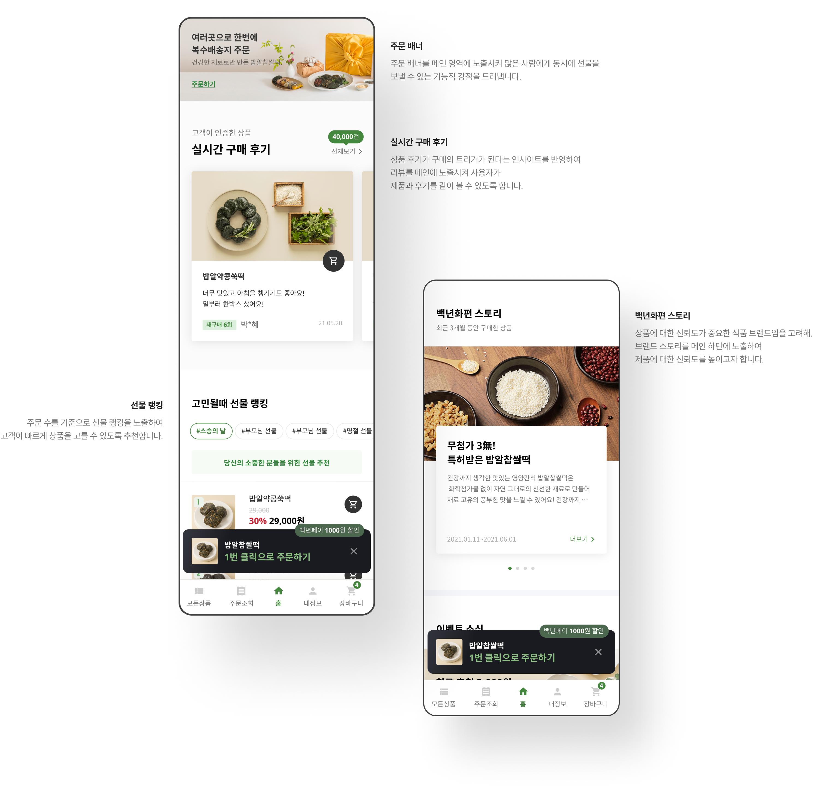
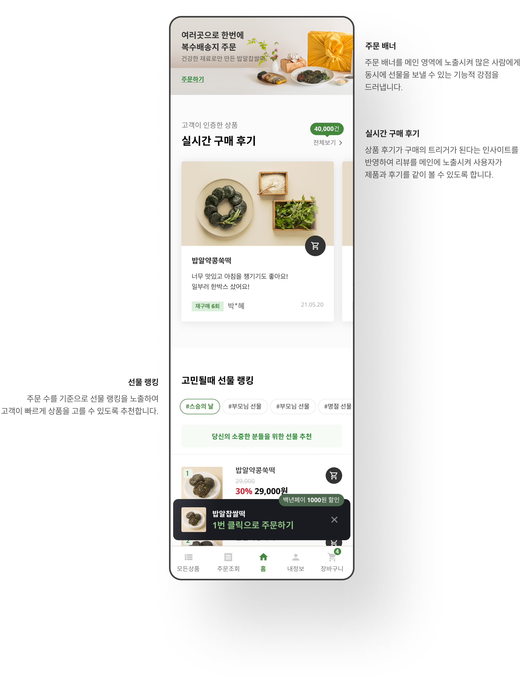
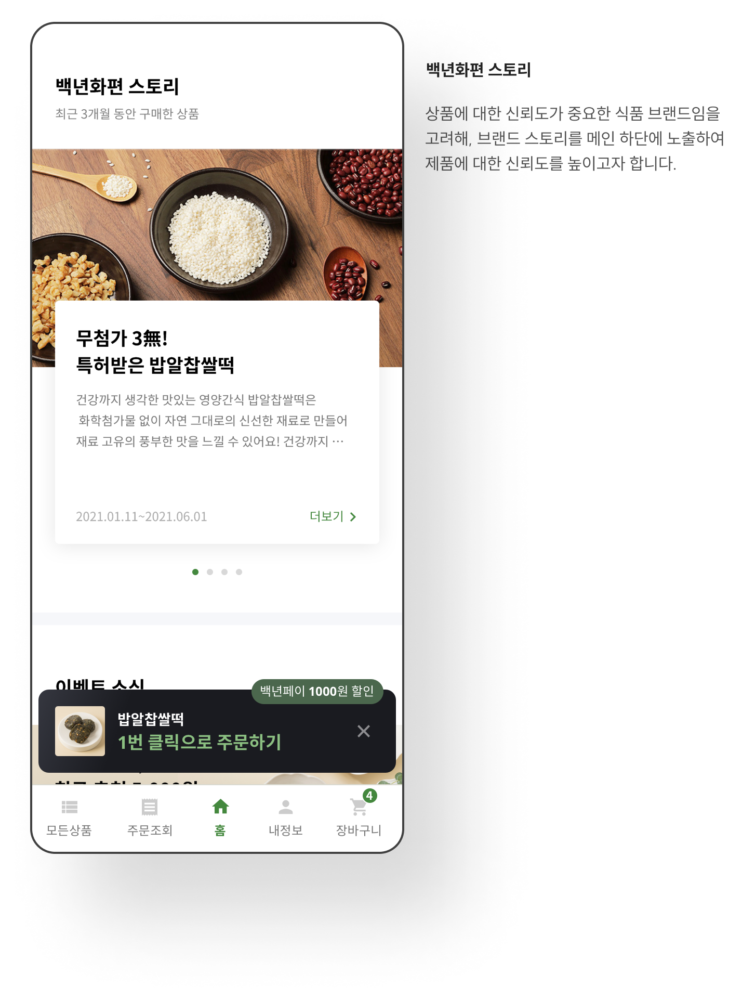
➂
모든상품, 주문조회 페이지
사용성 개선
사용성 개선
사용자 조사에서 많이 언급된 주요 화면의 사용성을 개선했습니다.
상품 페이지
홈 화면 이외에 모든 상품을 모아 볼 수 있는 페이지를
추가하여 상품 위계를 명료하게 시각화하고 탐색을 용이하게 합니다.
추가하여 상품 위계를 명료하게 시각화하고 탐색을 용이하게 합니다.
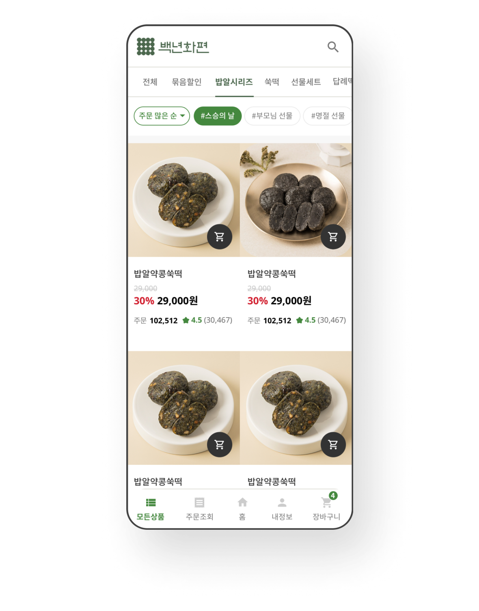
주문 조회 페이지
다양한 배송 형태를 선택하는 사이트 특성을 고려하여,
배송주문, 선물주문, 매장방문 주문내역을 구분된 Tab으로 노출합니다.
배송주문, 선물주문, 매장방문 주문내역을 구분된 Tab으로 노출합니다.
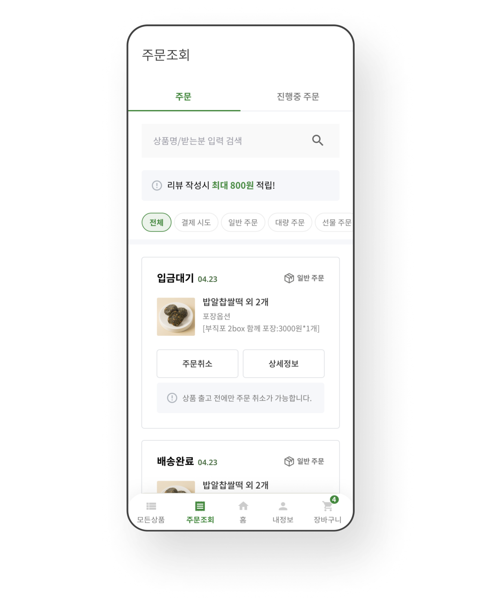
design strategy
디자인 전략
모바일 환경에 맞는 브랜드 가이드를 제작하기 위해 브랜드
핵심가치를 도출하고
이를 비주얼 랭귀지로 치환하여 브랜드 가이드 구축의 기반으로 정의하였습니다.
이를 비주얼 랭귀지로 치환하여 브랜드 가이드 구축의 기반으로 정의하였습니다.
HEALTH
warm
좋은 재료로
건강한 삶을 만들어주는
건강한 백년화편
건강한 삶을 만들어주는
건강한 백년화편
Premium
Sincere
정성으로 만들어져
소중한 사람들에게
선물하기 좋은 백년화편
소중한 사람들에게
선물하기 좋은 백년화편
Truthful
Trust
믿을 수 있는 재료로
만들어 모든 사람들이 좋아하는
믿을 수 있는 백년화편
만들어 모든 사람들이 좋아하는
믿을 수 있는 백년화편